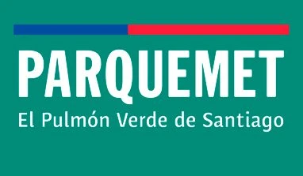
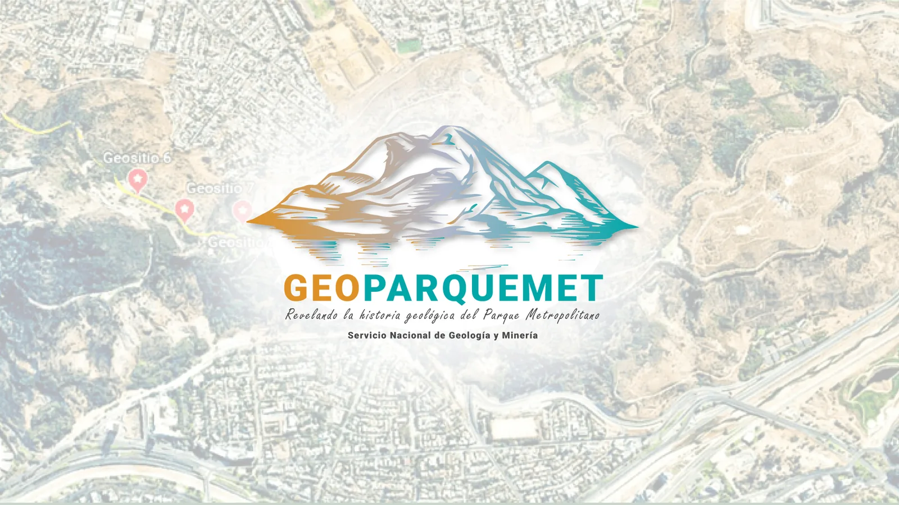

Sernageomin · Geopatrimonio
GeoParquemet
Geo-Ruta 1 · Pío Nono – Tupahue
Los geositios
App desarrollada por Carlos Venegas
Mi pasaporte geológico
Los sellos se obtienen al llegar físicamente a cada geositio con el GPS activado. En el recorrido virtual se marcan como “visto”.
Para terreno
Descarga fotos, narraciones y el mapa satelital del recorrido para usar la app sin señal.
Geología del recorrido
Glosario
Bibliografía
Créditos
💻 App desarrollada por Carlos Venegas
Contenido: proyecto GEOPARQUEMET, Unidad de Geopatrimonio del Servicio Nacional de Geología y Minería (Sernageomin), a partir del geotour virtual en Google Earth, del sitio geoparquemet y de sus capas geográficas (geositios, Geo-Ruta 1 y unidades geológicas).
Fotografías interpretadas, modelos 3D (Sketchfab) y videos: Geopatrimonio Sernageomin. Logos institucionales: Sernageomin y Parque Metropolitano de Santiago (Parquemet). Fotografía histórica de la piscina Tupahue según fuente citada en el sitio original.
Narración generada con voz neural sintética. Mapas: © Esri World Imagery, © colaboradores de OpenStreetMap.